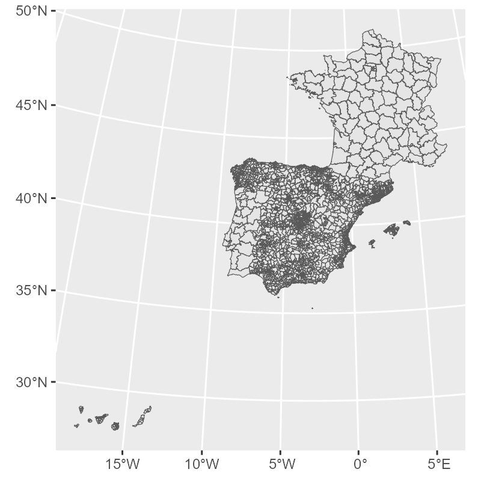

![]()
install.packages(c("spanishoddata", "tidyverse", "sf"))📊 Tutorial: Get & Aggregate Mobility Data
1 Setup
Before getting the data, make sure you have {spanishoddata} R package installed and loaded. We will also need {tidyverse} and {sf}.
library(spanishoddata)
library(tidyverse)
library(sf)The package needs a dedicated location on disk to save the data it downloads. Set it with:
spod_set_data_dir("data")The folder will be created if it does not exist.
Data directory /path/to/your/working/dir/data does not exist. Attempting to create it.
Data directory is writeable.
Data directory successfully set to: /path/to/your/working/dir/dataHere we are just setting the data directory to a subdirectory called data in the current working directory. If you want to use a different directory, change the path to something like spod_set_data_dir("C:/path/to/data") on Windows or spod_set_data_dir("/path/to/data") on Linux/macOS.
Warning
If you do not set the data directory, the package will still work, but it will download the data into a termporary directory of the current R session and you will lose it if you restart the session.
Now you are all set to start accessing the data!
2 Get the data
The data consists of zone boundaries spatial data and flat tables with flows between the zones. There are more details in the codebooks on the package website (codebook for v1 data covering years 2020-2021, codebook for v2 data covering years 2022 onwards).
Note
We will be working with v2 data, as it is more advanced and contains more variables.
Warning
v1 and v2 data are not directly comparable in terms of absolute number of trips between locations, as the methodologies for data colleciton and generation are slightly different.
2.1 Get the zone boundaries data
zones <- spod_get_zones(zones = "districts", ver = 2)glimpse(zones)Rows: 3,909
Columns: 10
$ id <chr> "01001", "01002", "01004_AM", "01009_AM", "01010", "01017_AM", "01028_AM", "01…
$ name <chr> "Alegría-Dulantzi", "Amurrio", "Artziniega agregacion de municipios", "Asparre…
$ population <dbl> 2925, 10307, 3005, 4599, 2951, 4314, 7515, 18009, 3418, 3771, 5029, 2636, 4466…
$ census_sections <chr> "0100101001; 0100101002", "0100201001; 0100201002; 0100201003; 0100201004; 010…
$ census_districts <chr> "0100101", "0100201", "0100401; 0104201", "0100901; 0101301; 0102101; 0102701;…
$ municipalities <chr> "01001", "01002", "01004; 01042", "01009; 01013; 01021; 01027; 01053; 01061", …
$ municipalities_mitma <chr> "01001", "01002", "01004_AM", "01009_AM", "01010", "01017_AM", "01028_AM", "01…
$ luas_mitma <chr> "01001", "01002", "01004_AM", "01009_AM", "01010", "01017_AM", "01028_AM", "01…
$ district_ids_in_v1 <chr> "01001_AM", "01002", "01010_AM", "01001_AM", "01010_AM", "01043_AM", "01031_AM…
$ geometry <MULTIPOLYGON [m]> MULTIPOLYGON (((538090.2 47..., MULTIPOLYGON (((501984.9 47..., M…gg_zones <- zones |>
st_simplify(dTolerance = 400) |>
ggplot() +
geom_sf(linewidth = 0.2)
gg_zones
2.2 Get the flows data
2.2.1 Define the dates
Let us get a few days of data. We will investigate the days when the city of Valencia was flooded.
We can get all dates that are available in the data:
available_dates <- spod_get_valid_dates(ver = 2)And check if the dates of interest exist in the available data range:
dates <- seq(ymd("2024-10-27"), ymd("2024-11-02"), by = "day")
all(dates %in% available_dates)TRUEWe can also check if the data is available for the weeks before and after the flood:
dates <- seq(ymd("2024-10-20"), ymd("2024-11-09"), by = "day")
all(dates %in% available_dates)FALSEOne date is missing:
dates[which(!dates %in% available_dates)]"2024-11-09"
Warning
Due to mobile network outages, the data on certain dates is missing. Kindly keep this in mind when calculating mean monthly or weekly flows.
Please check the original data page for currently known missing dates. You can use spod_get_valid_dates() function to get all available dates as shown above.
But that is fine, we still have the data for several days before and after.
2.2.2 Define the type of data and spatial scale
The Spanish mobility data (Ministerio de Transportes y Movilidad Sostenible (MITMS) 2024) contains several different datasets with different spatial scales and types of data, such as overnight stays, resident population counts and more. We will focus on origin-destination flows data for the most detailed spatial resolution.
Let us get the origin-destination flows for:
a day on the week before the flood
a day immidiately after the flood
a day of the week following the flood
a day one month after the flood
dates <- c("2024-10-23", "2024-10-30", "2024-11-06", "2024-11-27")
all(dates %in% available_dates)TRUE2.2.3 Get the data
The code below will download the requested dates and create the flows table.
flows <- spod_get(
type = "origin-destination",
zones = "districts",
dates = dates
)
Note
For the 4 requested dates, the spod_get() call above will download just under 1 GB of data. If you need to download more days, you will have to set the max_download_size_gb argument in spod_get(). This is a precaution against downloading too much data at once.
Tip
spod_download() can be used with the same arguments to simply pre-download the data without setting it up as a table.
You can now print the table to preview it:
flows# Source: table<od_csv_clean_filtered> [?? x 20]
# Database: DuckDB v1.2.1 [root@Darwin 24.4.0:R 4.5.0/:memory:]
date hour id_origin id_destination distance activity_origin activity_destination
<date> <int> <fct> <fct> <fct> <fct> <fct>
1 2024-11-27 13 01001 01001 0.5-2 frequent_activity home
2 2024-11-27 17 01001 01001 0.5-2 frequent_activity home
3 2024-11-27 14 01002 01001 10-50 frequent_activity home
4 2024-11-27 1 01009_AM 01001 10-50 frequent_activity home
5 2024-11-27 6 01009_AM 01001 10-50 frequent_activity home
6 2024-11-27 8 01009_AM 01001 10-50 frequent_activity home
7 2024-11-27 11 01009_AM 01001 10-50 frequent_activity home
8 2024-11-27 17 01009_AM 01001 10-50 frequent_activity home
9 2024-11-27 18 01009_AM 01001 10-50 frequent_activity home
10 2024-11-27 19 01009_AM 01001 10-50 frequent_activity home
# ℹ more rows
# ℹ 13 more variables: study_possible_origin <lgl>, study_possible_destination <lgl>,
# residence_province_ine_code <fct>, residence_province_name <fct>, income <fct>, age <fct>, sex <fct>,
# n_trips <dbl>, trips_total_length_km <dbl>, year <int>, month <int>, day <int>, time_slot <int>
# ℹ Use `print(n = ...)` to see more rowsOr use glimpse() to view its structure:
glimpse(flows)
Tip
str() and summary() will not work on this data in a way that you might expect, as it is not an ordinary data.frame, but a special tbl_* table object that is actually powered by DuckDB via {duckdb} R package in the background, but pretends to be a tibble (from {tibble}/{dplyr}/{tidyverse}).
class(flows)[1] "tbl_duckdb_connection" "tbl_dbi" "tbl_sql"
[4] "tbl_lazy" "tbl" Rows: ??
Columns: 20
Database: DuckDB v1.2.1 [root@Darwin 24.4.0:R 4.5.0/:memory:]
$ date <date> 2024-11-27, 2024-11-27, 2024-11-27, 2024-11-27, 2024-11-27, 2024-11-27…
$ hour <int> 13, 17, 14, 1, 6, 8, 11, 17, 18, 19, 22, 23, 14, 15, 19, 10, 12, 14, 19…
$ id_origin <fct> 01001, 01001, 01002, 01009_AM, 01009_AM, 01009_AM, 01009_AM, 01009_AM, …
$ id_destination <fct> 01001, 01001, 01001, 01001, 01001, 01001, 01001, 01001, 01001, 01001, 0…
$ distance <fct> 0.5-2, 0.5-2, 10-50, 10-50, 10-50, 10-50, 10-50, 10-50, 10-50, 10-50, 1…
$ activity_origin <fct> frequent_activity, frequent_activity, frequent_activity, frequent_activ…
$ activity_destination <fct> home, home, home, home, home, home, home, home, home, home, home, home,…
$ study_possible_origin <lgl> FALSE, FALSE, FALSE, FALSE, FALSE, FALSE, FALSE, FALSE, FALSE, FALSE, F…
$ study_possible_destination <lgl> FALSE, FALSE, FALSE, FALSE, FALSE, FALSE, FALSE, FALSE, FALSE, FALSE, F…
$ residence_province_ine_code <fct> 01, 01, 01, 01, 01, 01, 01, 01, 01, 01, 01, 01, 01, 01, 01, 01, 01, 01,…
$ residence_province_name <fct> "Araba/Álava", "Araba/Álava", "Araba/Álava", "Araba/Álava", "Araba/Álav…
$ income <fct> 10-15, 10-15, 10-15, 10-15, 10-15, 10-15, 10-15, 10-15, 10-15, 10-15, 1…
$ age <fct> NA, NA, NA, NA, NA, NA, NA, NA, NA, NA, NA, NA, NA, NA, NA, NA, NA, NA,…
$ sex <fct> NA, NA, NA, NA, NA, NA, NA, NA, NA, NA, NA, NA, NA, NA, NA, NA, NA, NA,…
$ n_trips <dbl> 2.465, 2.465, 4.755, 4.755, 2.390, 4.755, 2.390, 2.465, 7.145, 4.755, 2…
$ trips_total_length_km <dbl> 4.678, 4.678, 218.331, 51.022, 29.603, 51.022, 34.586, 30.861, 106.426,…
$ year <int> 2024, 2024, 2024, 2024, 2024, 2024, 2024, 2024, 2024, 2024, 2024, 2024,…
$ month <int> 11, 11, 11, 11, 11, 11, 11, 11, 11, 11, 11, 11, 11, 11, 11, 11, 11, 11,…
$ day <int> 27, 27, 27, 27, 27, 27, 27, 27, 27, 27, 27, 27, 27, 27, 27, 27, 27, 27,…
$ time_slot <int> 13, 17, 14, 1, 6, 8, 11, 17, 18, 19, 22, 23, 14, 15, 19, 10, 12, 14, 19…
Tip
The meaning of all the variables is explained in the codebook.
Tip
If for your analysis, only need total daily flows between municipalties without any extra information, you can save time by getting pre-aggregated reduced size data directly from the interactive map hosted by the Ministry of Transport and Sustainable Mobility. To do this, kindly refer to the “Quicky get daily data” vignette. However, this is not recommended for studies that require the code to be reproducible, as the API may change at any time. You can use this functionality for quick mobility estimates and in classroom for experiments.
2.2.4 Data verification
When mobility data files are downloaded with spod_get() or spod_download(), they are automatically checked by file size against known size of the remote files to prevent currupted downloads and preserve data integrity. However, if you would like to do an extra check you can use spod_check_files() with the same arguments you used for spod_get() or spod_download().
file_check <- spod_check_files(
type = "origin-destination",
zones = "districts",
dates = dates
)Data version detected from dates: 2
Using existing disk cache: /path/to/your/working/dir/data/metadata_cache/metadata_s3_v2_2025-07-02.rds
All checked files are consistent.all(file_check$local_file_consistent)TRUEIf the some files were corrupted, you could easily find out which ones with:
file_check |>
filter(local_file_consistent == FALSE)And you would be able to fix this by simply re-running the call to spod_get() or spod_download().
3 Aggregate the data
As noted before, the table you get from spod_get() is not an ordinary R data.frame or tibble. It is a database connection. As a result, you are actually supposed to query it using SQL syntax of DuckDB. However, thanks to the comprehensive ecosystem of R packages, for most operations, you can get away with using {dplyr} funtions and many other {tidyverse} and base R tools, as if this was just a data.frame or tibble table.
Warning
Not all analytical and data processing capabilities of DuckDB are available via base R and tidyverse functions, in some cases you will have to resort to SQL language. Large language models are of great help with that, do not hesistate to paste the description of the table from glimpse(trips) and your query into your favourite LLM to get the SQL query.
You can send an DuckDB SQL query and get the result as shown below:
con <- dbplyr::remote_con(flows) # get the underlying database connection
table_name <- dbplyr::remote_name(flows) # get the table name
library(duckdb)
library(glue)
dbGetQuery(con, glue("SELECT * FROM {table_name} LIMIT 5")) # simple example of SQL query, but can be any query supported by DuckDBMany common data operations are supported, such as {dplyr}’s filter(), select(), mutate(), summarise(), group_by() and more, as well as {lubridate} data and time manipulation functions, and base R sum(), mean(), median(), etc.
3.1 Aggregation examples
Ministerio de Transportes y Movilidad Sostenible (MITMS). 2024. “Estudio de La Movilidad Con Big Data (Study of Mobility with Big Data).” https://www.transportes.gob.es/ministerio/proyectos-singulares/estudio-de-movilidad-con-big-data.
Citation
BibTeX citation:
@online{kotov2025,
author = {Kotov, Egor},
title = {AGIT 2025 {Workshop:} {Analysing} {Massive} {Open} {Human}
{Mobility} {Data} in {R} {Using} Spanishoddata, Duckdb and Flowmaps},
date = {2025-07-03},
url = {https://www.ekotov.pro/agit-2025-spanishoddata/1-mobility-data.html},
doi = {10.5281/zenodo.14914417},
langid = {en}
}
For attribution, please cite this work as:
Kotov, Egor. 2025. “AGIT 2025 Workshop: Analysing Massive Open
Human Mobility Data in R Using Spanishoddata, Duckdb and
Flowmaps.” July 3, 2025. https://doi.org/10.5281/zenodo.14914417.